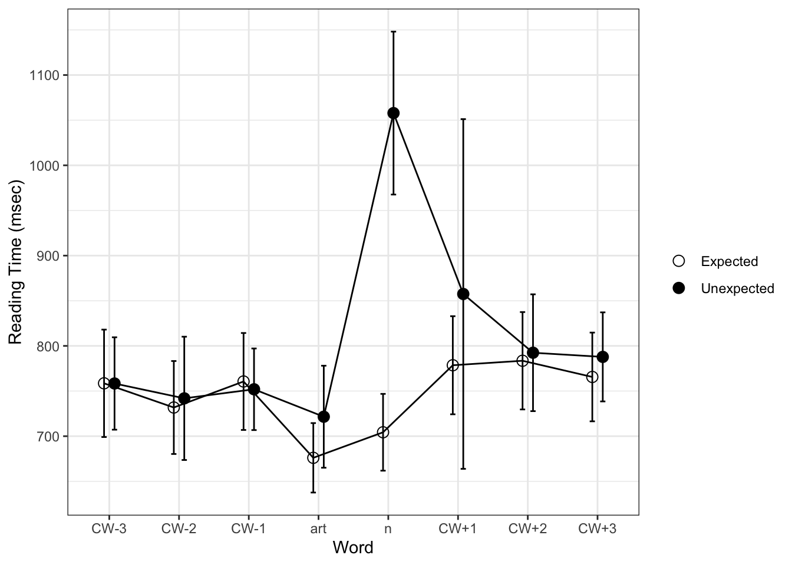

Code
library(lme4)
library(tidyverse)
library(stringr)
library(ggplot2)
library(here)
library(kableExtra)
library(gt)
library(plotly)
library(here)This study examined how our brains interpret and predict what words are coming next when we read or listen to someone speaking. The maze task was used to study how we anticipate words in a sentence by measuring a/an contrast in incremental processes. The study looked to support the theory that predictive processes play a large role in language comprehension. We hypothesized that participants would demonstrate differences in reaction times based on the expectation of encountering either “a” or “an” before a noun.
In the maze task, individuals were presented with sentences like “The reporter had dinner yesterday with the baseball player who Kevin admired” along with a sequence of choices between two alternatives for continuing the sentence. The two alternatives were either the correct continuation of the sentence or a Distractor that is either anomalous given the sentence context or pseudo words. This study used an A-maze task to manipulate noun predictability and analyze how prediction occurs in the field of linguistics.
The first step was setting up the necessary packages for analysis.
library(lme4)
library(tidyverse)
library(stringr)
library(ggplot2)
library(here)
library(kableExtra)
library(gt)
library(plotly)
library(here)We then wanted to create a thorough understanding of the variables explored in this dataset. This data dictionary explains all of the variables that will be analyzed.
#directory <- "C:\\Users\\cpgl0052\\Dropbox\\Research\\delong maze\\"
here :: i_am ("analysis/homework5-nadiasharapova.qmd")here() starts at /Users/nadiasharapova/Ling 343/HW FR/homework-5-nadiasharapovad <- read.csv(here("data/delong maze 40Ss.csv"),
header = 1, sep = ",", comment.char = "#", strip.white = T,
col.names = c("Index", "Time", "Counter", "Hash", "Owner",
"Controller", "Item", "Element", "Type", "Group",
"FieldName", "Value", "WordNum", "Word", "Alt",
"WordOn", "CorrWord", "RT", "Sent", "TotalTime",
"Question", "Resp", "Acc", "RespRT"))
df_all <- d| Variable | Meaning |
|---|---|
| Index | Results Index |
| Time | Time |
| Counter | Counter |
| Hash | Hash |
| Owner | Logged in as experiment owner? (if known) |
| Controller | Controller Name |
| Item | Item Number |
| Element | Element Number |
| Type | Type |
| Group | Group |
| FieldName | Field name |
| Value | Field Value |
| WordNum | Word Number |
| Word | Word |
| Alt | Alternative |
| WordOn | Word on(0=left, 1=right) |
| CorrWord | Correct |
| RT | Reading time to first answer |
| Sent | Sentence |
| TotalTime | Total Time to Correct Answer |
| Question | Question (NULL if none). |
| Resp | Answer |
| Acc | Whether or not answer was correct (NULL if N/A) |
| RespRT | Time taken to answer |
Our dataset has responses from a total of 38 recipients for analysis. For this step, I wanted to calculate the number of participants that I had data for. In the study, there were initially 40 participants, however one participant’s results didn’t transfer so there were only 39 for initial analysis. I also screened out the tenth row to remove the first row from the original data, which just had the label for my column “hash.” This meant that there were 38 participants that I had data for that I could analyze.
num_participants <- d %>%
count(Hash)
num_participants <- num_participants[-10,]
count(num_participants) n
1 38Data analysis necessitated the removal of certain trials from our dataset to ensure the integrity and reliability of our findings. For this step, item 29 was removed as there was a coding error. This left 67526 rows after removing the trials described in the data analysis section.
df_all <- read.csv(here("data/delong maze 40Ss.csv"),
header = 1, sep = ",", comment.char = "#", strip.white = T,
col.names = c("Index", "Time", "Counter", "Hash", "Owner",
"Controller", "Item", "Element", "Type", "Group",
"FieldName", "Value", "WordNum", "Word", "Alt",
"WordOn", "CorrWord", "RT", "Sent", "TotalTime",
"Question", "Resp", "Acc", "RespRT"))
df_rt <- df_all |>
filter(Controller == "Maze" & !str_detect(Type, "prac")) |>
select(1:10, 13:20) |>
separate(col = Type,
into = c("exp", "item", "expect", "position", "pos",
"cloze", "art.cloze", "n.cloze"),
sep = "\\.", convert = TRUE, fill = "right") |>
mutate(WordNum = as.numeric(WordNum),
Acc = as.numeric(as.character(recode(CorrWord, yes = "1", no = "0"))),
n.cloze.scale = scale(n.cloze),
art.cloze.scale = scale(art.cloze)) |>
mutate(across(where(is.character), as.factor)) |>
filter(item != 29) |>
filter(Hash != "9dAvrH0+R6a0U5adPzZSyA")
count(df_rt) n
1 67526I wanted to understand the role of age in predictive analytics. I calculated summary statistics for participant ages, revealing key insights into the composition of this sample, including mean, minimum, maximum, and standard deviation of participant ages. This table shows that our participants varied widely in ages, between 18 and 17, with a mean age of 34.8. Understanding the age distribution of participants is crucial for understanding our findings as variations in reaction times/cognitive processes may be influenced by age-related factors.
demo <- d[d$Controller == "Form",1:12]
names(demo) <- c("Subject","MD5","TrialType","Number","Element","Experiment","Item","Field","Response","X","field","resp")
demo <- as.data.frame(lapply(demo, function (x) if (is.factor(x) | is.character(x)) factor(x) else x))
age_summary <- demo %>%
filter(field == "age") %>%
summarize(m.age = mean(as.numeric(as.character(resp))),
min.age = min(as.numeric(as.character(resp))),
max.age = max(as.numeric(as.character(resp))),
sd.age = sd(as.numeric(as.character(resp))))
age_summary_df <- as.data.frame(age_summary)
age_summary_table <- knitr :: kable(age_summary_df, format= "markdown")
print(age_summary_table)
| m.age| min.age| max.age| sd.age|
|--------:|-------:|-------:|--------:|
| 34.87179| 18| 71| 14.08093|Figure 1 (below) shows the response times by expected answer. This figure shows the response time by Expectation, with RTs for the unexpected group being significantly slower on the noun and preceding article.
rt <- d[d$Controller == "Maze" & substr(d$Type,1,4) != "prac", c(1:10,13:20)]
rt <- separate(data = rt, col = Type, into = c("exp", "item", "expect", "position", "pos", "cloze", "art.cloze", "n.cloze"), sep = "\\.", convert = TRUE, fill = "right")
rt <- as.data.frame(lapply(rt, function (x) if (is.factor(x) | is.character(x)) factor(x) else x))
rt$WordNum <- as.numeric(as.character(rt$WordNum))
rt$RT <- as.numeric(as.character(rt$RT))
rt$TotalTime <- as.numeric(as.character(rt$TotalTime))
rt$Acc <- as.numeric(as.character(recode(rt$CorrWord, yes = "1", no = "0")))
rt$n.cloze.scale <- scale(rt$n.cloze)
rt$art.cloze.scale <- scale(rt$art.cloze)
rt.s <- rt[rt$Hash != '9dAvrH0+R6a0U5adPzZSyA',]
rt.s$rgn.fix <- rt.s$WordNum - rt.s$pos + 1
rt.s$word.num.z <- scale(rt.s$WordNum)
rt.s$word.len <- nchar(as.character(rt.s$Word))
rt.s$Altword.len <- nchar(as.character(rt.s$Alt))
contrasts(rt.s$expect) <- c(-.5,.5)
rt.s$item.expect <- paste(rt.s$item, rt.s$expect, sep=".")
delong.items <- rt.s %>% filter(rgn.fix == 0) %>% distinct(item.expect, .keep_all = TRUE)
#Response accuracy
rt.s.filt <- rt.s[rt.s$Hash != "gyxidIf0fqXBM7nxg2K7SQ" & rt.s$Hash != "f8dC3CkleTBP9lUufzUOyQ",]
rt.s.rgn <- rt.s.filt %>% filter(rgn.fix > -4 & rgn.fix < 5) %>% filter(Acc == 1) %>% as.data.frame()
rgn.rt.raw <- rt.s.filt %>% filter(rgn.fix > -4 & rgn.fix < 5) %>% filter(Acc == 1) %>% group_by(rgn.fix, expect) %>% summarize(n=n(), subj=length(unique(Hash)), rt=mean(RT), sd=sd(RT), stderr=sd/sqrt(subj)) %>% as.data.frame()`summarise()` has grouped output by 'rgn.fix'. You can override using the
`.groups` argument.rgn.rt.raw$rgn <- as.factor(recode(rgn.rt.raw$rgn.fix, "-3"="CW-3", "-2"="CW-2", "-1"="CW-1", "0"="art", "1"="n","2"="CW+1", "3"="CW+2", "4"="CW+3"))
rgn.rt.raw$rgn <- ordered(rgn.rt.raw$rgn, levels = c("CW-3", "CW-2", "CW-1", "art", "n", "CW+1", "CW+2", "CW+3"))
ggplot(rgn.rt.raw, aes(x=rgn, y=rt, group=expect, shape=expect)) +
geom_line(stat = "identity", position=position_dodge(width=.3)) +
geom_point(stat = "identity", position=position_dodge(width=.3), size=3) +
geom_errorbar(aes(ymin = rt-stderr, ymax = rt+stderr), width=.15, position=position_dodge(width=.3)) +
scale_shape_manual(name="", labels=c("Expected", "Unexpected"), values = c(21,19)) +
xlab("Word") + ylab("Reading Time (msec)") +
theme_bw()
This table (below) summarizes the results found in figure 1 and shows more info on the response time by region. The presented table summarizes the key findings, providing a reference point for researchers interested in predictive linguistics.
summary_rgn <- rgn.rt.raw %>%
group_by(rgn, expect) %>%
summarize(
Mean_RT= mean(rt),
Min_RT= min(rt),
Max_RT=max(rt)
)`summarise()` has grouped output by 'rgn'. You can override using the `.groups`
argument.print(summary_rgn)# A tibble: 16 × 5
# Groups: rgn [8]
rgn expect Mean_RT Min_RT Max_RT
<ord> <fct> <dbl> <dbl> <dbl>
1 CW-3 expected 759. 759. 759.
2 CW-3 unexpected 758. 758. 758.
3 CW-2 expected 732. 732. 732.
4 CW-2 unexpected 742. 742. 742.
5 CW-1 expected 761. 761. 761.
6 CW-1 unexpected 752. 752. 752.
7 art expected 676. 676. 676.
8 art unexpected 722. 722. 722.
9 n expected 704. 704. 704.
10 n unexpected 1058. 1058. 1058.
11 CW+1 expected 779. 779. 779.
12 CW+1 unexpected 858. 858. 858.
13 CW+2 expected 784. 784. 784.
14 CW+2 unexpected 792. 792. 792.
15 CW+3 expected 766. 766. 766.
16 CW+3 unexpected 788. 788. 788.##Conclusions and Key Takeaways Our study explored how people understand language, focusing on the “a/an” contrast in English. We found that when people expect to see a certain word, like “a” or “an,” they react faster. This suggests that our brains use predictions to understand language more quickly. We also looked at how age might affect this process. While we found some differences, more research is needed to understand how age impacts language understanding.